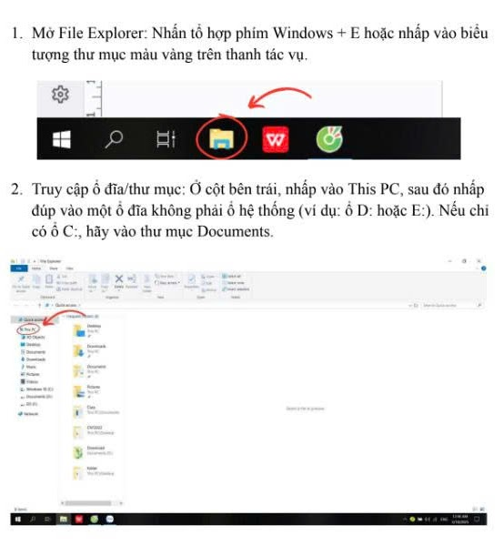
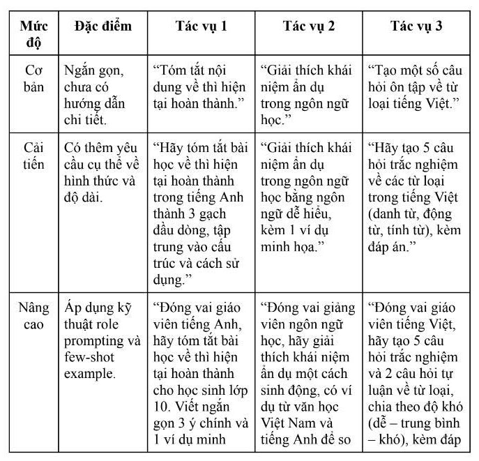
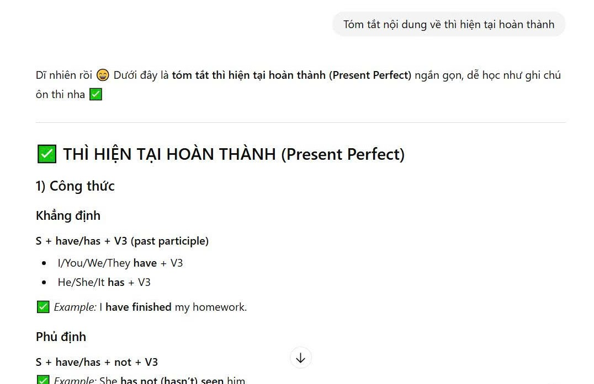
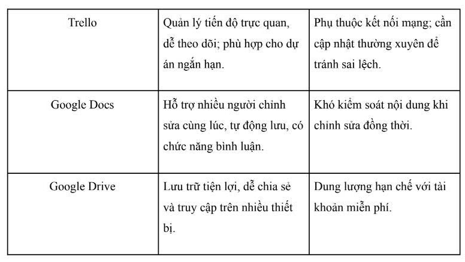
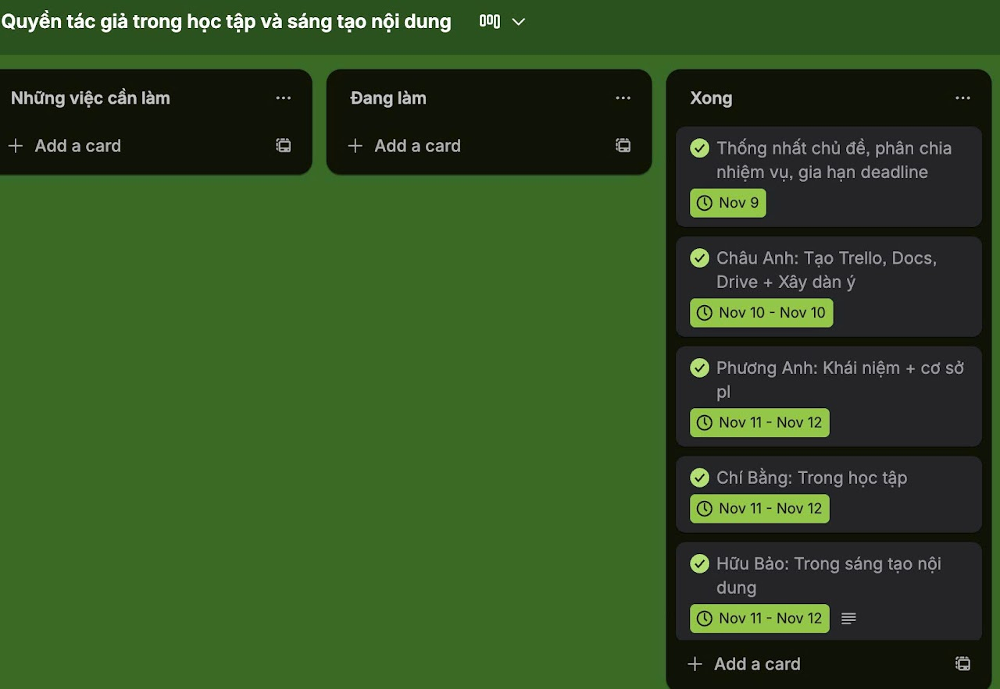
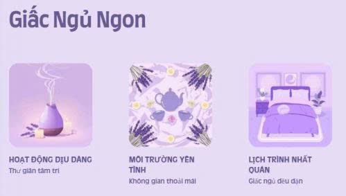

Nguyễn Chí Tùng
UET - VNU
Mục tiêu học tập
Định hướng và mục tiêu rèn luyện kiến thức kỹ năng số trong học kỳ:
- Nắm vững những kỹ năng số đã học, biết cách tổ chức công việc và quản lý tài liệu khoa học hơn.
- Rèn khả năng tìm kiếm và đánh giá thông tin một cách chính xác, tránh bị nhiễu bởi những nguồn không đáng tin.
- Sử dụng AI hiệu quả để tiết kiệm thời gian, học tập thông minh hơn và làm bài tốt hơn mà vẫn đảm bảo đúng tinh thần học thuật.
Mục tiêu của Portfolio
Tác dụng và giá trị của việc lưu trữ các sản phẩm số:
- Lưu trữ sản phẩm: Ghi lại đầy đủ các sản phẩm học tập như hình ảnh, bài viết, prompt, kế hoạch nhóm hay video theo từng bài để thấy rõ sự thay đổi và cải thiện của bản thân qua mỗi bài tập.
- Tự đánh giá: Tập thói quen tự đánh giá, rút kinh nghiệm sau mỗi bài để làm tốt hơn ở những lần sau.
- Áp dụng thực tiễn: Biết cách áp dụng kiến thức vào thực tế, để những kỹ năng này không chỉ dùng cho môn học mà còn hữu ích lâu dài, học cách sử dụng AI một cách hợp lý và có trách nhiệm.
Thông tin sinh viên
Thao tác cơ bản trên Tệp & Thư mục
Tổ chức quản lý dữ liệu máy tính khoa học và thực hành các thao tác cơ bản trên hệ điều hành Windows.
Nội dung thực hành: Quản lý tệp tin và thư mục
Bài tập 1 - Chương 1: Máy tính và các thiết bị ngoại vi
Mục tiêu bài tập: Rèn luyện kỹ năng tạo, đổi tên, sao chép, di chuyển, xóa tệp tin và thư mục một cách thành thạo trên hệ điều hành Windows (có thể điều chỉnh cho macOS/Linux).
Quy trình thực hiện chi tiết
Mở File Explorer
Nhấn tổ hợp phím Windows + E hoặc nhấp vào biểu tượng thư mục màu vàng trên thanh tác vụ.
Truy cập phân vùng lưu trữ
Ở cột bên trái, nhấp vào This PC, sau đó nhấp đúp vào một ổ đĩa không phải ổ hệ thống (ví dụ: ổ D: hoặc E:). Nếu không có ổ C:, hãy vào thư mục Documents.
Tạo thư mục làm việc chính
Nhấp chuột phải vào khoảng trống -> chọn New -> Folder. Đặt tên thư mục là ThucHanh_NguyenChiTung. Nhấn Enter.
Tạo tệp ghi chú mới
Nhấp đúp chuột để vào thư mục vừa tạo. Nhấp chuột phải vào khoảng trống -> New -> Text Document. Đặt tên tệp là GhiChu.txt. Nhấn Enter.
Đổi tên tệp tin
Nhấp chuột phải vào tệp GhiChu.txt -> chọn Rename. Đổi tên thành GhiChuQuanTrong.txt. Nhấn Enter.
Tạo thư mục con phân loại
Trong thư mục ThucHanh_NguyenChiTung, nhấp chuột phải -> New -> Folder. Đặt tên là TaiLieu.
Sao chép tệp tin (Copy & Paste)
Nhấp chuột phải vào tệp GhiChuQuanTrong.txt -> chọn Copy (hoặc chọn tệp rồi nhấn Ctrl + C). Nhấp đúp vào thư mục TaiLieu, nhấp chuột phải vào khoảng trống -> chọn Paste (hoặc nhấn Ctrl + V) để tạo bản sao.
Di chuyển tệp tin (Cut & Paste)
Quay lại thư mục chính. Tạo một tệp mới tên là DiChuyen.txt. Nhấp chuột phải vào tệp -> chọn Cut (hoặc nhấn Ctrl + X). Nhấp đúp vào thư mục TaiLieu, nhấp chuột phải vào khoảng trống -> chọn Paste (hoặc nhấn Ctrl + V). Tệp gốc sẽ di dời sang vị trí mới.
Xóa tệp tin
Trong thư mục TaiLieu, nhấp chuột phải vào tệp GhiChuQuanTrong.txt -> chọn Delete. Tệp sẽ được chuyển vào Thùng rác (Recycle Bin).
Xóa vĩnh viễn tệp
Chọn tệp DiChuyen.txt, nhấn giữ phím Shift và nhấn Delete. Xác nhận xóa vĩnh viễn tệp ra khỏi hệ thống mà không qua Thùng rác.
Khôi phục từ Recycle Bin
Mở Recycle Bin ngoài màn hình desktop. Tìm tệp GhiChuQuanTrong.txt đã xóa, nhấp chuột phải và chọn Restore để khôi phục về vị trí ban đầu.
Sơ đồ cấu trúc thư mục học tập
-
Documents (D:)
- Altstore
-
Data
- Cá nhân
-
Học tập
- Chung
- CV
- Kì 1
- kì 2
Giải thích ý nghĩa thiết kế cấu trúc
“Em thiết kế cấu trúc thư mục theo hướng phân loại rõ ràng theo mục đích sử dụng để dễ quản lý và tránh bị lẫn tài liệu. Trong đó, thư mục Data được dùng làm nơi lưu trữ chính, sau đó chia nhỏ thành các nhóm như Cá nhân, Học tập, Chung và CV nhằm tách biệt tài liệu theo từng lĩnh vực cụ thể.
Việc phân chia thêm theo Kì 1 và Kì 2 giúp em sắp xếp bài tập, tài liệu môn học theo từng giai đoạn học tập, thuận tiện cho việc tìm lại khi ôn thi hoặc tổng hợp. Cách tổ chức này giúp tiết kiệm thời gian, hạn chế thất lạc file và tạo thói quen làm việc khoa học hơn.”
Ảnh đính kèm minh chứng

Xem chi tiết thư mục bài làm
Toàn bộ tài liệu báo cáo và tệp thực hành được lưu trữ trên Google Drive của tôi.
Tìm kiếm & Đánh giá nguồn thông tin học thuật
Sử dụng Google Scholar, cơ sở dữ liệu quốc tế uy tín, áp dụng các tiêu chí đánh giá nguồn lực tin cậy.
Nội dung thực hành: Tìm kiếm học thuật
Bài tập 2 - Chương 2: Khai thác dữ liệu và thông tin
Mục tiêu bài tập: Phát triển kỹ năng tìm kiếm và đánh giá thông tin học thuật từ các nguồn đáng tin cậy.
1. Lựa chọn chủ đề nghiên cứu
Em chọn chủ đề "Án lệ Việt Nam – vai trò và thực tiễn áp dụng trong hệ thống pháp luật" vì án lệ được chính thức thừa nhận tại Việt Nam từ năm 2016 và đang có ảnh hưởng ngày càng rõ nét trong hoạt động xét xử thực tiễn.
2. Phương pháp & Nguồn tìm kiếm
Em thực hiện tìm kiếm thông tin từ 4 nhóm nguồn bắt buộc bao gồm: cơ sở dữ liệu học thuật (Google Scholar), tạp chí chuyên ngành, sách chuyên khảo và nguồn mở trên Internet. Ngoài ra, em bổ sung thêm cổng thông tin chính thức của Tòa án nhân dân tối cao (TANDTC) và các báo cáo chính sách để tăng tính thực tiễn.
3. Tiêu chí đánh giá độ tin cậy của tài liệu tham khảo
Khi tìm kiếm trên Google Scholar, em ưu tiên thu thập các tài liệu trong giai đoạn 2015-2025, bao gồm bài báo khoa học, sách chuyên khảo, báo cáo chính thống; trong đó có các bài nghiên cứu tiêu biểu như Nguyễn Cần Cường (2018), Trần Thị Hiền (2020), Lê Mai Anh (2021). Các tài liệu được đánh giá độ tin cậy dựa trên các tiêu chí nghiêm ngặt:
Bảng tổng hợp & Đánh giá độ tin cậy 10 nguồn thông tin khoa học (IoT Security)
Kết quả phân tích, đánh giá độ tin cậy của 10 nguồn thông tin học thuật đã thu thập:
| STT | Tên tài liệu / Tác giả / Năm | Loại nguồn | Cơ quan xuất bản / Lưu trữ | Phương pháp nghiên cứu | Xếp hạng & Đánh giá độ tin cậy |
|---|---|---|---|---|---|
| 1 | Securing the Threads: In-Depth Analysis of IoT Architecture and Threat Mitigation (2025) | Bài báo khoa học | IEEE Xplore / SMART Conference | Phân tích thực nghiệm đa tầng kiến trúc IoT, mô phỏng tấn công DDoS và giải pháp Học máy kết hợp Blockchain. | Rất cao (A) Xuất bản bởi IEEE, phản ánh công nghệ bảo mật mới nhất 2025. |
| 2 | IoT Security through ML/DL: Software Engineering Challenges and Directions (2025) | Bài báo khoa học | ICCK Journal of Software Engineering | Nghiên cứu hệ thống (Systematic Review) dữ liệu từ IEEE Xplore giai đoạn 2020–2024, đánh giá giải pháp AI/ML chống xâm nhập. | Rất cao (A) Tổng quan hệ thống chuẩn mực, có dữ liệu đối sánh định lượng rõ ràng. |
| 3 | Deeper Insight Into Why Authentication Schemes in IoT Environments Fail to Achieve the Desired Security (Yimin Guo et al., 2024) | Bài báo khoa học | IEEE Transactions on Information Forensics and Security | Phân tích toán học và thực nghiệm các thuật toán xác thực lỗi trên thiết bị IoT đầu cuối. | Xuất sắc (A+) Tạp chí thuộc nhóm Q1 ISI, độ kiểm duyệt học thuật cao nhất. |
| 4 | A Review of Lightweight IoT Authentication Protocols from Perspective of Costs (I. Cetintav et al., 2025) | Bài báo khoa học | IEEE Access | So sánh hiệu năng phần cứng, chi phí tính toán và mức tiêu thụ năng lượng của các giao thức mã hóa hạng nhẹ. | Rất cao (A) Đánh giá tối ưu hóa phần cứng sâu sắc, dữ liệu thực nghiệm nhúng thực tế. |
| 5 | Automated IoT Firmware Vulnerability Detection Using Large Language Models (Preprints, 2025) | Bài báo khoa học | MDPI Preprints / OWASP Framework | Thực nghiệm xây dựng pipeline tự động hóa công cụ dịch ngược (Ghidra, EMBA) phối hợp với mô hình ngôn ngữ lớn LLM. | Trung bình/Cao (B) Đột phá nhưng ở dạng tiền xuất bản (Preprint), cần đối chiếu thêm. |
| 6 | Exploring security threats and solutions Techniques for IoT: from vulnerabilities to vigilance (Sahu & Mazumdar, 2024) | Bài báo khoa học | Frontiers in Artificial Intelligence | Khảo sát phân loại tấn công tầng vật lý (Side-channel, phần cứng) và tầng mạng (Sniffing, XSS). | Rất cao (A) Hệ thống Frontiers uy tín, phân tích chi tiết lỗ hổng phần cứng. |
| 7 | A Literature Review on Security in the Internet of Things: Identifying Critical Categories (MDPI, 2025) | Bài báo khoa học | MDPI Computer Sciences | Phân tích thư mục, tổng hợp trắc lượng khoa học các xu hướng tấn công từ năm 2021 đến 2025. | Rất cao (A) Cung cấp số liệu thống kê trực quan về tốc độ tăng trưởng thiết bị. |
| 8 | Comprehensive Analysis of IoT Security: Threats, Detection Methods, and Defense Strategies (JIOT, 2024) | Bài báo khoa học | Tech Science Press | Phân tích kiến trúc 3 lớp (Hardware, System, User Layer) và đề xuất hash mật mã để xác thực firmware integrity. | Rất cao (A) Định hướng giải pháp kỹ thuật rất rõ ràng cho lập trình viên hệ thống. |
| 9 | Enhancing IoT Security: Predicting Password Vulnerability using Machine Learning (EJECE, 2024) | Bài báo khoa học | European Journal of Electrical Engineering | Sử dụng tập dữ liệu lưu trữ các cuộc tấn công Brute Force để huấn luyện mô hình dự đoán độ yếu mật khẩu. | Trung bình/Cao (B) Phương pháp thực tế nhưng dữ liệu phụ thuộc nhiều vào lịch sử cũ. |
| 10 | OWASP IoT Security Testing Guide (2025/2026) | Sách chuyên khảo / Cẩm nang | Open Worldwide Application Security Project (OWASP) | Tổng hợp các kịch bản kiểm thử (Test cases) chuẩn quốc tế áp dụng cho phân tích tĩnh và động trên hệ thống IoT. | Xuất sắc (A+) Cẩm nang chuẩn công nghiệp (Industry Standard) uy tín tối cao. |
Ảnh đính kèm minh chứng

Xem chi tiết tài liệu học tập
Truy cập thư mục lưu trữ danh sách tài liệu tham khảo đầy đủ đã thu thập.
Kỹ năng viết Prompt hiệu quả với AI
Áp dụng các kỹ năng Prompt Engineering (Role, Context, Constraints, Few-shot) trong học tập.
Nội dung thực hành: Viết prompt hiệu quả cho các tác vụ học tập
Bài tập 3 - Chương 3: Tổng quan về trí tuệ nhân tạo
Mục tiêu bài tập: Phát triển kỹ năng viết prompt hiệu quả cho các tác vụ học tập để nhận được phản hồi chất lượng tốt nhất từ các công cụ AI.
Quy trình thực hiện
- Bước 1: Chọn tác vụ phổ biến: Em chọn 3 tác vụ học tập phổ biến gồm: Tóm tắt ngữ pháp tiếng Anh (Thì hiện tại hoàn thành), Giải thích khái niệm học thuật phức tạp (Ẩn dụ trong ngôn ngữ học), và Tạo bộ câu hỏi ôn tập (Chủ đề "Từ loại tiếng Việt").
- Bước 2: Thiết lập 3 cấp độ Prompt: Viết Prompt cơ bản, Prompt cải tiến (có yêu cầu cấu trúc, giới hạn), và Prompt nâng cao (áp dụng kỹ thuật role prompting và few-shot example).
Nguyên tắc & Mẹo viết prompt rút ra
- Rõ ràng & cụ thể: Thêm ngữ cảnh và vai trò (Role prompting) giúp AI trả lời đúng tông giọng.
- Thiết lập giới hạn: Giới hạn đầu ra (số gạch đầu dòng, số từ, cấu trúc mẫu) giúp tránh câu trả lời lan man.
- Đưa ví dụ mẫu (Few-shot prompting): Giúp AI hiểu định dạng kết quả kỳ vọng dễ dàng.
Đánh giá hiệu quả giữa các cấp độ Prompt
Prompt Cơ bản
Nội dung thường đúng lý thuyết nhưng rất dài, lan man và thiếu cấu trúc tóm gọn, bắt học viên phải tự lọc lại thông tin.
Prompt Cải tiến
Kết quả gọn gàng hơn, tập trung đúng nội dung chính và cấu trúc yêu cầu, dễ dùng làm ghi chú học tập nhanh.
Prompt Nâng cao
Đạt kết quả tối ưu nhất. Nhờ vai trò giáo viên và định hướng đối tượng, AI cung cấp thông tin cô đọng, dễ hiểu và có ví dụ minh họa cực kỳ trực quan.
Các phiên bản thiết kế Prompt chi tiết
Phiên bản Cơ bản
“Tóm tắt nội dung về thì hiện tại hoàn thành.”
Phiên bản Cải tiến
“Hãy tóm tắt bài học về thì hiện tại hoàn thành thành 3 gạch đầu dòng, tập trung vào cấu trúc và cách sử dụng.”
Phiên bản Nâng cao
“Bạn hãy đóng vai giáo viên tiếng Anh. Hãy tóm tắt bài học về thì hiện tại hoàn thành cho học sinh lớp 10. Viết ngắn gọn 3 ý chính và 1 ví dụ minh họa.”
Nội dung phản hồi của AI (Transcribed from image6):
“Dạ được nhé 😊 Cô/Thầy sẽ tóm tắt nhanh "Thì Hiện Tại Hoàn Thành (Present Perfect)" theo kiểu ghi chú ôn thi, dễ nhớ nha:
THÌ HIỆN TẠI HOÀN THÀNH (Present Perfect)
1) Công thức
* Khẳng định: S + have/has + V3/ed (I/You/We/They + have | He/She/It + has)
* Phủ định: S + haven't/hasn't + V3/ed
* Nghi vấn: Have/Has + S + V3/ed ?
2) Cách dùng chính
* (1) Quá khứ nhưng liên quan hiện tại (nhấn vào kết quả ở hiện tại).
* (2) Bắt đầu trong quá khứ và kéo dài đến hiện tại (thường đi với for / since).”
Phiên bản Cơ bản
“Giải thích khái niệm ẩn dụ trong ngôn ngữ học.”
Phiên bản Cải tiến
“Giải thích khái niệm ẩn dụ trong ngôn ngữ học bằng ngôn ngữ dễ hiểu, kèm 1 ví dụ minh họa.”
Phiên bản Nâng cao
“Đóng vai giảng viên ngôn ngữ học, hãy giải thích khái niệm ẩn dụ một cách sinh động, có ví dụ từ văn học Việt Nam và tiếng Anh để so sánh.”
Phiên bản Cơ bản
“Tạo một số câu hỏi ôn tập về từ loại tiếng Việt.”
Phiên bản Cải tiến
“Hãy tạo 5 câu hỏi trắc nghiệm về các từ loại trong tiếng Việt (danh từ, động từ, tính từ), kèm đáp án.”
Phiên bản Nâng cao
“Đóng vai giáo viên tiếng Việt, hãy tạo 5 câu hỏi trắc nghiệm và 2 câu hỏi tự luận về từ loại, chia theo độ khó (dễ – trung bình – khó), kèm đáp án và lời giải ngắn gọn.”
Ảnh đính kèm minh chứng

Ảnh đính kèm: Ma trận cấu trúc thiết kế Prompt

Ảnh đính kèm: Minh họa phản hồi chi tiết của AI trên thiết bị
Xem chi tiết báo cáo kỹ năng Prompt
Tài liệu lưu trữ đầy đủ các đoạn hội thoại thử nghiệm prompt.
Giao tiếp & Hợp tác trong môi trường số
Làm việc nhóm khoa học thông qua bộ công cụ số: Trello, Google Docs, Google Meet và Zalo.
Nội dung thực hành: Làm việc nhóm trực tuyến
Bài tập 4 - Chương 4: Giao tiếp và hợp tác trong môi trường số
Mục tiêu bài tập: Thành thạo các công cụ hợp tác trực tuyến để phân công công việc, cộng tác tài liệu và quản lý dự án nhóm đúng tiến độ.
Thiết lập không gian làm việc chung
Nhóm tiến hành lựa chọn một dự án nghiên cứu nhỏ kéo dài trong 1 tuần với chủ đề "Quyền tác giả trong học tập và sáng tạo nội dung" (hoặc ứng dụng AI trong Y học). Các công cụ được thống nhất phân bổ:
- Trello: Tạo bảng làm việc chung gồm 3 cột chính: Những việc cần làm - Đang làm - Xong.
- Google Docs: Tạo tài liệu chung phân quyền chỉnh sửa để cùng biên soạn báo cáo.
- Google Drive: Tạo thư mục lưu trữ tài liệu tham khảo chung của cả nhóm.
Quy trình quản lý tiến độ trên Trello
Mỗi nhiệm vụ cụ thể được nhóm trưởng tạo dưới dạng một card và gán tên thành viên phụ trách rõ ràng. Cách phân công này giúp cả nhóm theo dõi trực quan ai đang làm phần nào và tiến độ chung ra sao. Các tính năng như đặt deadline (ngày đến hạn) và checklist được sử dụng để kiểm soát thời gian. Khi hoàn thành, card được kéo sang cột "Xong", giúp giảm thiểu rủi ro chậm trễ công việc.
Khó khăn gặp phải & Giải pháp khắc phục của nhóm
| Khó khăn thực tế | Nguyên nhân | Giải pháp xử lý của nhóm |
|---|---|---|
| Tin nhắn Zalo bị trôi, khó tìm lại thông tin cũ. | Gửi quá nhiều tin nhắn lộn xộn, không phân luồng trò chuyện. | Quy định: Chỉ bàn về bài tập trong nhóm chat chính và bắt buộc ghim những thông tin quan trọng lên đầu nhóm. |
| Một số thành viên chưa quen sử dụng Trello. | Đây là lần đầu tiên tiếp cận giao diện quản lý Kanban. | Nhóm trưởng tìm tài liệu hướng dẫn và quay video ngắn hướng dẫn thao tác cơ bản gửi vào nhóm. |
| Google Docs bị lag khi nhiều người cùng chỉnh sửa. | Đường truyền wifi yếu và số lượng người chỉnh sửa đồng thời quá đông. | Chia nhỏ các phần nội dung ra làm riêng, sau đó nhóm trưởng sẽ tổng hợp lại thành một file chính hoàn chỉnh. |
| Thành viên quên deadline công việc. | Chỉ nhắc nhở thủ công trên Zalo, tin nhắn dễ bị bỏ qua. | Bật tính năng nhắc nhở tự động trên thẻ Trello và nhóm trưởng trực tiếp tag tên nhắc nhở trước deadline 1 ngày. |
| File đính kèm trên Zalo bị giới hạn dung lượng. | Một số tài liệu y học tham khảo dung lượng lớn hơn 100MB. | Upload toàn bộ tài liệu lên Google Drive chung và chia sẻ link thay vì gửi file trực tiếp. |
Ảnh đính kèm minh chứng

Ảnh đính kèm: Sơ đồ phân bổ công cụ hợp tác trực tuyến

Ảnh đính kèm: So sánh ưu nhược điểm của Trello, Docs và Drive

Ảnh đính kèm: Giao diện phân công nhiệm vụ thực tế của nhóm
Xem chi tiết thư mục Bài làm 4
Báo cáo quy trình làm việc nhóm, phân tích tình huống và biên bản làm việc.
Sáng tạo nội dung số - Thiết kế Infographic
Ứng dụng AI tạo ảnh, sinh văn bản và công cụ thiết kế đồ họa để truyền thông kiến thức bổ ích.
Nội dung thực hành: Sử dụng AI hỗ trợ sáng tạo nội dung
Bài tập 5 - Chương 5: Sáng tạo nội dung số
Mục tiêu bài tập: Thành thạo việc kết hợp các công cụ AI tạo sinh khác nhau để hoàn thiện một sản phẩm nội dung số hoàn chỉnh theo chủ đề thực tế.
Quy trình phối hợp 3 công cụ AI
Em lựa chọn thực hiện dự án thiết kế nội dung truyền thông chủ đề "5 dấu hiệu stress ở sinh viên và cách tự chăm sóc tinh thần mỗi ngày" (kết hợp thiết kế infographic "Giấc ngủ ngon"). Quy trình bao gồm:
- ChatGPT (Văn bản): Sử dụng prompt chi tiết để sinh dàn ý, lên ý tưởng nội dung bài đăng blog và các gạch đầu dòng khoa học.
- DALL-E 3 (Hình ảnh): Tạo ra các sticker, biểu tượng phẳng phong cách màu pastel đồng bộ để minh họa cho bài viết.
- Canva AI (Thiết kế): Điều chỉnh bố cục, font chữ tiếng Việt, phối hợp màu sắc làm dịu mắt để xuất ra sản phẩm infographic trực quan cuối cùng.
Phân tích vai trò & Rút kinh nghiệm về AI
Ưu điểm: AI hỗ trợ tiết kiệm tối đa thời gian lên ý tưởng ban đầu, tạo nội dung nhanh chóng và đồng bộ hóa phong cách đồ họa.
Hạn chế: Nội dung lý thuyết cần người viết kiểm chứng kỹ để tránh hiện tượng ảo tưởng của AI. Trình tạo ảnh DALL-E 3 thường xuyên bị lỗi chính tả khi vẽ chữ tiếng Việt trên ảnh.
Thay đổi quy trình: AI đóng vai trò như một trợ lý, giúp dịch chuyển công việc từ tự tay vẽ/viết từ đầu sang kiểm duyệt, chọn lọc và tối ưu hóa sản phẩm.
Sản phẩm Infographic & Banner nghệ thuật đính kèm

Ảnh đính kèm: Infographic truyền thông "Giấc Ngủ Ngon" cho sinh viên
Ảnh đính kèm: Banner minh họa "Sweet Dreams" phong cách pastel
Tải về các tệp thiết kế gốc
Link Google Drive lưu trữ file ảnh chất lượng cao và file PDF của Infographic.
An toàn thông tin & Sử dụng AI có trách nhiệm
Tuân thủ liêm chính học thuật, nghiên cứu chính sách nhà trường và xây dựng đạo đức sử dụng công nghệ số.
Nội dung thực hành: Sử dụng AI có trách nhiệm trong học tập
Bài tập 6 - Chương 6: An toàn và liêm chính học thuật trong môi trường số
Mục tiêu bài tập: Hiểu rõ và cam kết tuân thủ chính sách của trường đại học về liêm chính học thuật khi sử dụng các công cụ trí tuệ nhân tạo trong học tập và nghiên cứu khoa học.
Nghiên cứu chính sách học thuật tại VNU
Đại học Quốc gia Hà Nội (VNU) xem trí tuệ nhân tạo (AI) là một công cụ hỗ trợ người học trong việc tham khảo ý tưởng, sửa lỗi lập trình hoặc cải thiện diễn đạt. Tuy nhiên, VNU tuyệt đối cấm việc lạm dụng AI để thay thế tư duy phản biện cá nhân hoặc làm sai lệch kết quả đánh giá năng lực thực tế của người học.
Ranh giới đạo đức hỗ trợ học tập
Hợp lệ: Sử dụng AI để tham khảo dàn ý, gợi ý từ vựng, tìm lỗi logic trong lập trình.
Gian lận: Sử dụng AI để viết toàn bộ bài làm, bài luận sau đó nộp trực tiếp dưới danh nghĩa là sản phẩm do bản thân tự làm.
Bộ 6 nguyên tắc cá nhân về sử dụng AI có trách nhiệm
AI chỉ là công cụ hỗ trợ, quyết định và tư duy cuối cùng thuộc về cá nhân người học.
Luôn trung thực và minh bạch khi sử dụng AI; ghi nhận rõ ràng sự đóng góp của AI khi được yêu cầu.
Chỉ sử dụng AI trong phạm vi được phép theo quy chế học thuật của nhà trường (không dùng thi cử, làm bài hộ).
Chịu trách nhiệm hoàn toàn đối với tính chính xác và liêm chính của nội dung nộp bài cuối cùng.
Luôn chủ động kiểm tra, chỉnh sửa, bổ sung lập luận riêng để cá nhân hóa kết quả từ AI, tránh đạo văn không chủ ý.
Không lạm dụng hoặc phụ thuộc quá mức vào AI nhằm duy trì năng lực tự học và phát triển tư duy độc lập.
Ảnh đính kèm minh chứng

Ảnh đính kèm: Poster cổ động "Sử dụng AI có trách nhiệm trong học thuật"

Ảnh đính kèm: Quy tắc 3 & 4 trích lục hướng dẫn an toàn số
Xem chi tiết thư mục bài làm 6
Báo cáo đầy đủ về quy tắc liêm chính học thuật và sử dụng AI có trách nhiệm.
Nhìn lại chặng đường & Liên hệ
Đánh giá quá trình rèn luyện kỹ năng số và thông tin liên hệ chính thức.
Nhìn lại bản thân (Reflection)
“Trong quá trình làm Portfolio, điều khiến em áp lực nhất lúc đầu là làm sao để liên kết tất cả bài tập thành một sản phẩm thống nhất. Vì mỗi bài có yêu cầu khác nhau nên em khá dễ bị rối, phải chỉnh sửa bố cục nhiều lần để Portfolio nhìn gọn gàng và mạch lạc hơn.
Dần dần, em nhận ra đây không chỉ là một bài nộp mà là một quá trình học thật sự. Những việc tưởng nhỏ như quản lý tệp, lưu tài liệu hay ghi nguồn tham khảo lại giúp em hình thành thói quen làm việc có tổ chức và cẩn thận hơn. Em cũng học được cách tìm kiếm thông tin học thuật hiệu quả và biết đánh giá độ tin cậy của nguồn.
Phần em thích nhất là sử dụng AI và viết prompt. Em hiểu rằng muốn AI hỗ trợ tốt thì mình phải đặt câu hỏi rõ ràng, có mục tiêu và biết kiểm tra lại kết quả. Kết thúc dự án, em thấy bản thân tiến bộ hơn cả về kỹ năng số lẫn cách học: chủ động hơn, biết tự đánh giá và cải thiện từng bước. Portfolio vì vậy không chỉ là sản phẩm cuối cùng mà còn là dấu mốc ghi lại quá trình em phát triển.”
Thông tin liên hệ
Nguyễn Chí Tùng
UET - VNU Student